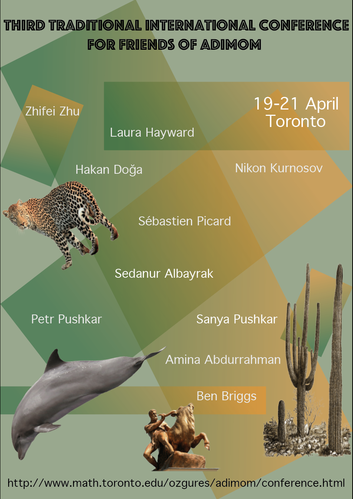

AdIMOM
Adequate Institute of Mediocre and Outstanding Mathematics
About us |
Past Seminars |
Conference

On April 19-21, approximately twenty of us will gather in our house in Toronto and spend the weekend talking about mathematics. We expect there to be ten talks: five on Saturday, five on Sunday. We will supply food, coffee, tea and snacks in rich abundance, with a reception to be held Friday evening. If you share our philosophy and passion for mathematics, you are invited to join us for our third conference at AdIMOM.
For questions please email homemadeseminar [at] gmail [dot] com
2018 conference
2017 conference
Invited Speakers
- Amina Abdurrahman, (Princeton University)
- Sedanur Albayrak, (University of Waterloo)
- Ben Briggs, (University of Utah and AdIMOM)
- Hakan Doğa (University at Buffalo, SUNY)
- Laura Hayward, (Columbia University)
- Nikon Kurnosov, (University of Georgia)
- Sebastien Picard, (Harvard University)
- Petr Pushkar, (University of Toronto and Permiter Institute)
- Sanya Pushkar, (Northwestern University)
- Zhifei Zhu, (University of Toronto)
Schedule
| Friday |
|
| 20:00 |
Dinner |
| Saturday |
|
| 9:00-9:50 |
Breakfast and Registration |
| 10:00-11:00 |
Ben Briggs (abstract) |
| 11:00-11:30 |
Tea Break |
| 11:30-12:30 |
Sebastien Picard (abstract) |
| 12:30-14:30 |
Lunch |
| 14:30-15:30 |
Zhifei Zhu (abstract) |
| 15:30-16:00 |
Tea Break |
| 16:00-17:00 |
Hakan Doğa (abstract) |
| 17:10-18:10 |
Sanya Pushkar (abstract) |
| 18:10-19:30 |
Discussions and rest (or excursion to LCBO) |
| 19:30-21:30 |
Dinner |
| 21:30-23:30 |
Entertainment. |
| 23:30-00:00 |
Teeth brush break |
| 00:00 |
Bed time |
| Sunday |
|
| 9:00-10:20 |
Breakfast |
| 10:30-11:30 |
Nikon Kurnosov (abstract) |
| 11:30-12:00 |
Tea Break |
| 12:00-13:00 |
Sedanur Albayrak (abstract) |
| 13:10-15:00 |
Lunch |
| 15:00-16:00 |
Petr Pushkar (abstract) |
| 16:00-16:30 |
Tea Break |
| 16:30-17:30 |
Amina Abdurrahman (abstract) |
| 17:30-18:30 |
Laura Hayward (abstract) |
| 18:30-19:30 |
Discussions and rest (or excursion to LCBO) |
| 19:30-21:00 |
Dinner |
-----
Abstracts
Speaker: Sebastien Picard
Date: April 20, 2019
Title: Calabi-Yau manifolds with torsion and geometric flows
Abstract: We will discuss non-Kahler complex geometry, with a focus on
non-Kahler Calabi-Yau threefolds. These objects were proposed as
heterotic string compactifications by C. Hull and A. Strominger. We
propose to study this geometry by using the Anomaly flow, which is a
nonlinear flow of non-Kahler metrics. This is joint work with T. Fei,
D.H. Phong, and X.-W. Zhang.
-----
Speaker: Zhifei Zhu
Date: April 20, 2019
Title: Length of a shortest periodic geodesic on manifolds of dimension four
Abstract: In this talk I will discuss how to obtain an estimate about the length of periodic geodesics on a simply-connected Riemannian manifold.
In particular, I will show that on a closed, simply-connected, non-collapse Riemannian manifold of dimension four with bounded diameter and Ricci curvature, the length of a shortest periodic geodesic is bounded by a function which only depend on the volume and diameter of the manifold. This function is explicit if the manifold is Einstein.This result is a joint work with N. Wu.
-----
Speaker: Hakan Doğa
Date: April 20, 2019
Title: Grids, Legendrian and Transverse Knots
Abstract: Grid Homology is a combinatorial version of Knot Floer Homology defined by Manolescu, Ozsvath and Sarkar, which enables us to carry on calculations much more efficiently. In this talk, I will talk about grid representations of knots and how we can also relate that to contact topology, more specifically Legendrian and Transverse knots in 3-sphere with standard contact structure.
-----
Speaker: Ben Briggs
Date: April 21, 2019
Title: The Singularity Categories of Ragnar-Olaf Buchweitz
Abstract:
The Singularity Category,
Was introduced by Buchweitz in his work,
On stable properties of certain rings.
Then rediscovered in geometry,
When decades later Orlov found these things.
What I would like to do is try to tell,
How Serre duality is an instance
Tate Cohomology of groups as well,
And stable things that come from BGG.
I hope I can explain some of this dance,
This part of what Ragnar has helped us see.
(Before the taking of a toast and tea)
-----
Speaker: Nikon Kurnosov
Date: April 20, 2019
Title: Automorphisms of hyperkahler manifolds
Abstract: I will give the short introduction to the world of hyperkahler manifolds, and then discuss properties of their automorphisms groups. Even, how they sound.
-----
Speaker: Amina Abdurrahman
Date: April 21, 2019
Title: Galois representations and modular forms
Abstract:
TBA
-----
Speaker: Petr Pushkar
Date: April 21, 2019
Title: Overview of different ways of counting curves and why count them at all
Abstract: In this talk I will attempt to overview some areas of Enumerative Geometry and how they are intertwined. You might hear some things about GW, DT, PT, and QM invariants (at the very least you'll hear what these letters stand for). You might also see where does representation theory come into this game, and maybe even an instance of Symplectic duality.
-----
Speaker: Laura Hayward
Date: April 21, 2019
Title: Some mathematics in population genetics and adaptation to a new environment
Abstract:A major question in evolutionary biology is finding the genetic basis of adaption. Of particular interest is recent adaption in humans and the extent to which the obvious phenotypic differences between human populations are due to adaption. In this talk we introduce basic population genetic models for adaptation, discussing both classical work on adaptation of Mendelian traits (those with a simple genetic basis) and new work on adaptation of polygenic traits (those with a more complex genetic basis). In particular we focus on the phenotypic and genetic response to selection on a highly polygenic trait after a change in environment induces a change in the trait's optimal value.
-----
Speaker: Sedanur Albayrak
Date: April 20, 2019
Title: A refinement of Christol's theorem for algebraic power
series
Abstract: One of the fundamental results in the theory of finite-
state automata is Christol’s thoerem, which asserts that a power
series F (x) = \sum a_nx^n with coefficients in a finite field F_q , q a power
of a prime p, is algebraic over the field of rational functions F_q (x)
if and only if the sequence {a_n} is p-automatic. When one looks
at the support of an algebraic power series, that is the set of n
for which a_n\neq 0, one obtains an automatic subset of the natural
numbers. A well-known dichotomy exists for automatic sets: they
are either sparse, having at most O((log n)^d ) elements of size at
most n for some d \geq 1 and all n; or they are non-sparse and have at
least n^\alpha elements of size at most n for some positive number \alpha and
all n sufficiently large. Adopting this point of view, it is natural to
ask if a refinement of Christol’s theorem exists that characterizes
algebraic power series with sparse support purely algebraically. We
prove that the collection of such series forms a subring of the ring
algebraic power series and that this ring can be described purely in
terms of well-known algebraic properties. We also show that this
framework extends to generalized power series studied by Kedlaya. Joint with Jason Bell.
-----
Speaker: Sanya Pushkar
Date: April 21, 2019
Title: Modelling the process of painting in classical artwork
Abstract: How can an applied mathematician quantify visual art? In this talk, I will outline new ways to bridge the laws of painting with the world of predictive physical models. Major motivations behind current mathematical approaches are authenticating paintings, identifying artistic styles and its progression over artistic career, and estimating painting price. I will introduce currently existing approaches and further introduce new models that recover paints used by artists and the dynamics of the process of painting itself – in particular the mixing of paints and use and adoption of color harmonies. This project is based on experimental art studies and classical art theory. Methods include networks science, data analysis, and convex geometry. Such quantification of artwork will allow an automated identification of materials used in historic artworks, the dating of artwork, and identifying and replicating individual artistic style.